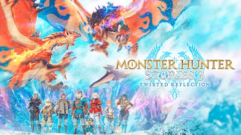

Monster Hunter Stories 3: Twisted Reflection ha llegado para demostrar que la franquicia Capcom tiene músculo más allá del combate en tiempo real. Lanzado el 13 de marzo en PS5, Xbox Series X|S, PC y con versión dedicada para Switch 2, el JRPG de crianza y combate por turnos ha recibido una acogida crÃtica que supera a los dos primeros entries de la saga. RPGFan lo describe como "el mejor de la trilogÃa, con momentos sorprendentemente épicos y un tono maduro y agridulce que no esperabas de una saga protagonizada por dragones adorables." Nintendo Life le da un 8/10 y destaca su mundo enorme y sus mecánicas de huevo.
El juego te pone en la piel del PrÃncipe —o Princesa— de Azuria, un reino en conflicto con su vecino Vermeil mientras una plaga cristalina llamada el "Encroachment" amenaza el mundo. Lo que el juego tiene de especial es su apuesta por personajes con arcos propios, un protagonista con voz y un elenco de Rangers que te acompañan toda la partida con sus propias historias paralelas. La duración estimada ronda las 60-80 horas, con postgame incluido para los más completistas.
El sistema de combate mantiene el piedra-papel-tijera de entregas anteriores —ataques de Poder, Técnica y Velocidad— pero añade capas suficientes para hacer los combates contra Jefes Ancianos genuinamente estratégicos. Las animaciones de los Ataques de Kinship son espectaculares. La pega más común en la crÃtica son los 30 FPS en Switch 2 y algunos problemas de pop-in de texturas en esa versión. En PC el rendimiento es prácticamente impecable.
Digitally Downloaded lo pone más alto todavÃa: "Para bien o para mal, Twisted Reflection envÃa un mensaje claro — este spin-off podrÃa convertirse en algo igual de esencial que la saga principal." VGC añade que es "el mayor y más épico monster-catching que existe." Si eres fan de JRPGs de tono emotivo con un sistema de crianza profundo —y no te importa que los protagonistas sean tan adorables que dan grima— este es tu juego del primer trimestre de 2026.